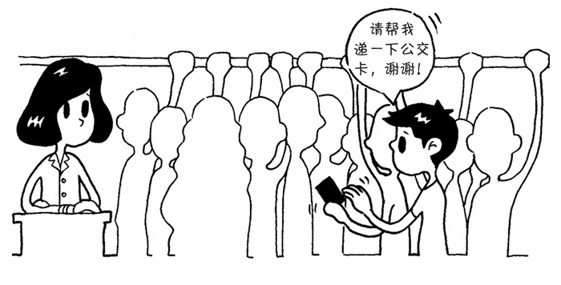

职责链模式的例子在现实中并不难找到，以下就是两个常见的跟职责链模式有关的场景。
如果早高峰能顺利挤上公交车的话，那么估计这一天都会过得很开心。因为公交车上人实在太多了，经常上车后却找不到售票员在哪，所以只好把两块钱硬币往前面递。除非你运气够好，站在你前面的第一个人就是售票员，否则，你的硬币通常要在N个人手上传递，才能最终到达售票员的手里。
中学时代的期末考试，如果你平时不太老实，考试时就会被安排在第一个位置。遇到不会答的题目，就把题目编号写在小纸条上往后传递，坐在后面的同学如果也不会答，他就会把这张小纸条继续递给他后面的人。
从这两个例子中，我们很容易找到职责链模式的最大优点：请求发送者只需要知道链中的第一个节点，从而弱化了发送者和一组接收者之间的强联系。如果不使用职责链模式，那么在公交车上，我就得先搞清楚谁是售票员，才能把硬币递给他。同样，在期末考试中，也许我就要先了解同学中有哪些可以解答这道题。
